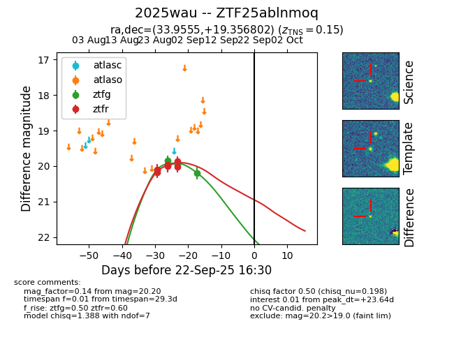
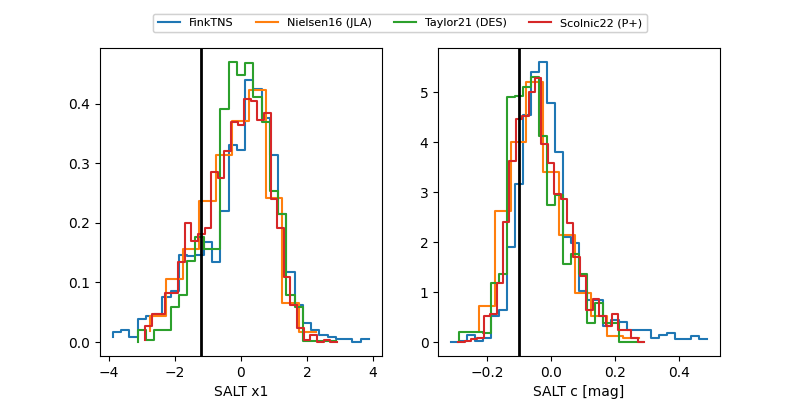

FINK: ZTF25ablnmoq
Lasair: ZTF25ablnmoq
ALeRCE: ZTF25ablnmoq
TNS: 2025wau
YSE: 2025wau
ZTF25ablnmoq (ztf,fink)
2025wau (tns,yse)
equatorial (ra, dec) = (33.9555,+19.35680)
galactic (l, b) = (148.9285,-39.21759)


last ztfg=20.20, ztfr=19.87
5 ztfg, 6 ztfr detections